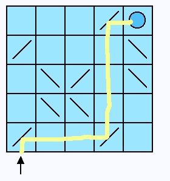

Adding More Game Stats
Our next enhancement is to add a way to track some more game statistics for the player. I'd like to present a counter that shows how many mirrors are on the grid and another counter to show how many are active when the laser is on.
We begin by putting stub methods on the Grid class and then write unit tests to exercise those methods. Add these two instance methods to the Grid class.
numberOfMirrors
^0
numberOfActiveMirrors
^0
Now we construct a new unit test. For the tests we will use the standard grid for all our unit tests so far.

|
 |
This test grid has 10 mirrors. When the laser is fired it has 3 active mirrors. Let's write the unit tests to check this.
On the GridTestCase add these two test methods.
testNumberOfMirrorsCounter
| grid count |
grid := self generateDemoGrid.
count := grid numberOfMirrors.
self should: [count = 10].
testNumberOfActiveMirrorsCounter
| grid count |
grid := self generateDemoGrid.
count := grid numberOfActiveMirrors.
self should: [count = 0].
grid fireLaser.
count := grid numberOfActiveMirrors.
self should: [count = 3].
Of course we don't expect these to run just yet. Now we add the real functional methods to our Grid class to count the mirrors. Here's the instance method that correctly counts the number of mirrors in the grid.
numberOfMirrors
^(self cells select: [:each | each class = MirrorCell]) size
Here's the other method we will need.
numberOfActiveMirrors
^(self cells select: [:each | (each class = MirrorCell) and: [each isOn]]) size
When we run the unit tests they now pass. Our next step is add counters to the LaserGame morph that show these values as the game is played.